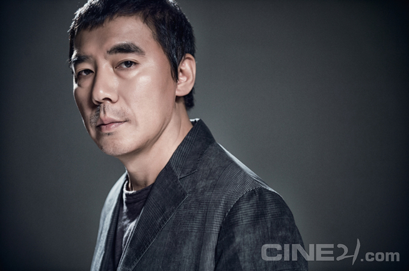
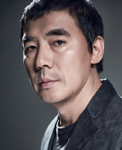

김지운 감독이 애플TV+가 선보이는 6부작 드라마 미스터 로빈(가제)을 연출한다 外
글 씨네21 취재팀 사진 손홍주(사진팀 선임기자) 2020-10-30
애플TV+
 김지운 감독이 애플TV+가 선보이는 6부작 드라마 미스터 로빈(가제)을 연출한다. 미스터 로빈은 웹툰 닥터 브레인을 원작으로 하며, 천재 뇌 과학자가 죽은 사람의 뇌에 접속하며 벌어지는 일을 그리는 메디컬 스릴러다.CJ ENM
할리우드 콘텐츠 투자회사 라이브러리 픽쳐스 인터내셔널(이하 LPI)과 해외 로컬 영화 제작을 위한 투자 파트너십을 체결했다. LPI는 향후 3년간 CJ ENM이 인도네시아, 터키, 베트남에서 제작하는 현지 로컬영화에 최대 50%까지 투자할 계획이다.웨이브, 티빙, 왓챠, 카카오페이지, 롯데컬쳐웍스
OTT음악저작권대책협의체(이하 음대협)가 지난 10월 26일, 한국음악저작권협회(이하 음저협)의 협상을 재차 요구하는 성명서를 냈다. 음저협이 음악 저작권료 공동 협상은 거부하면서, 저작권료 침해 형사고소로 압박을 가하고 있다는 것이 음대협의 주장이다.관련 인물
김지운